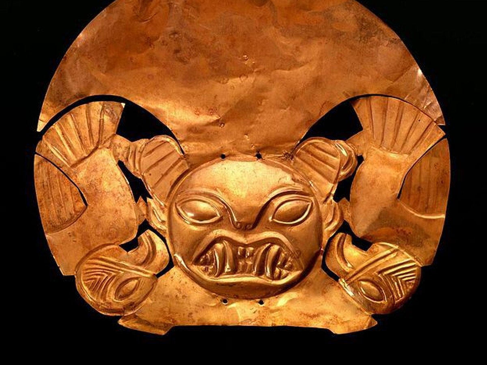
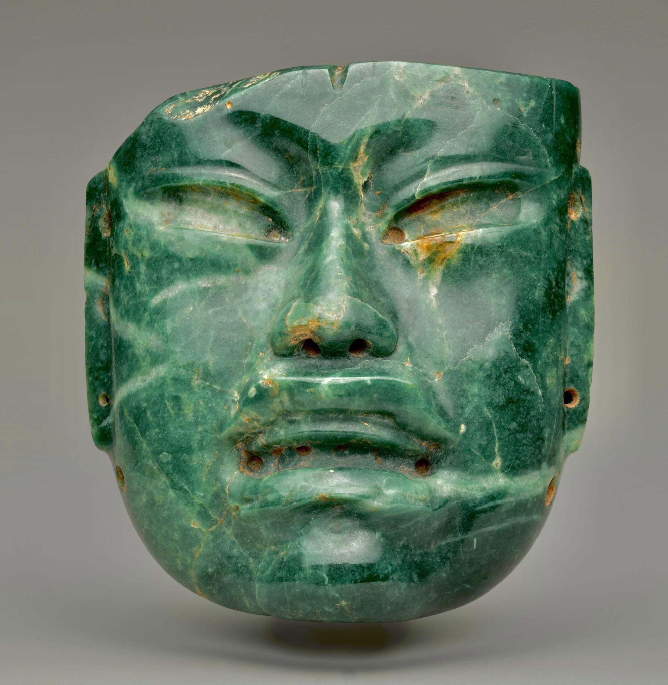
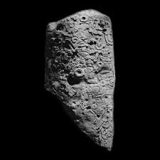

Perú

Cultura Moche
Análisis detallado de la cerámica escultórica y su importancia en los rituales funerarios del norte peruano.
Data estimada: 100 d.C. - 700 d.C. Explorar PerúExplorando el patrimonio cultural a través del tiempo

Análisis detallado de la cerámica escultórica y su importancia en los rituales funerarios del norte peruano.
Data estimada: 100 d.C. - 700 d.C. Explorar Perú
Exploración de la simbología en las máscaras de jade encontradas en los yacimientos de La Venta.
Data estimada: 1200 a.C. - 400 a.C. Explorar México
Interpretación de los glifos mayas que narran el ascenso de los señores de la selva petenera.
Periodo Clásico Maya Explorar Guatemala